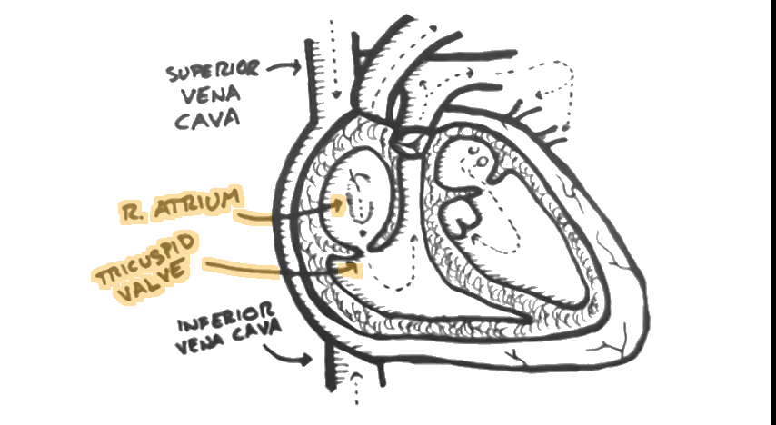
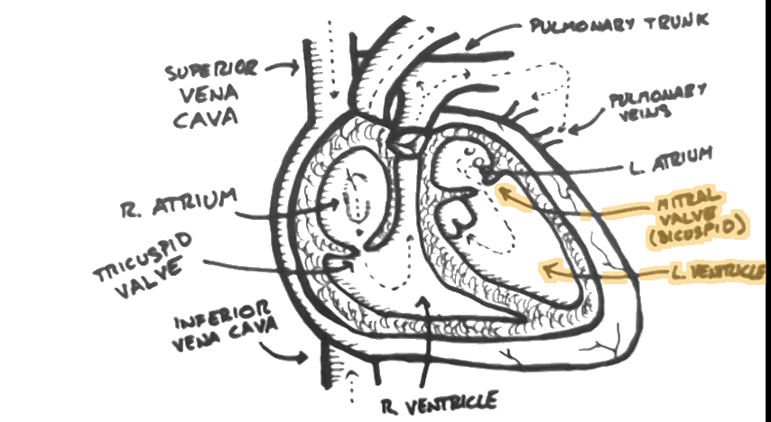

Heart Lecture


- 


- 


hi in this beer I'm gonna talk about the anatomy of the heart and this is just going to be in overview the gross anatomy a hard and the Chamber's showed quickly here and I'm gonna grow this so that it's being dissected to show all the changes all the heart and all the valves for small